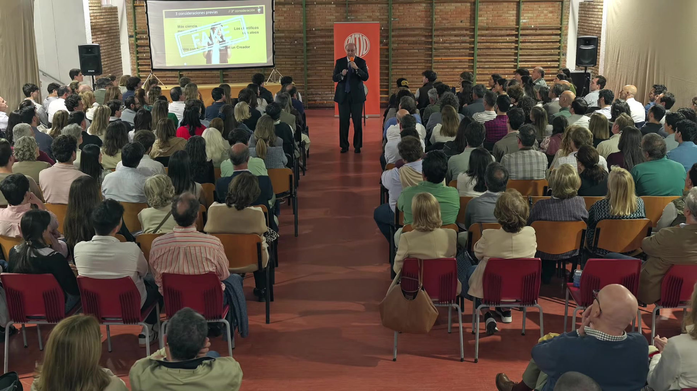
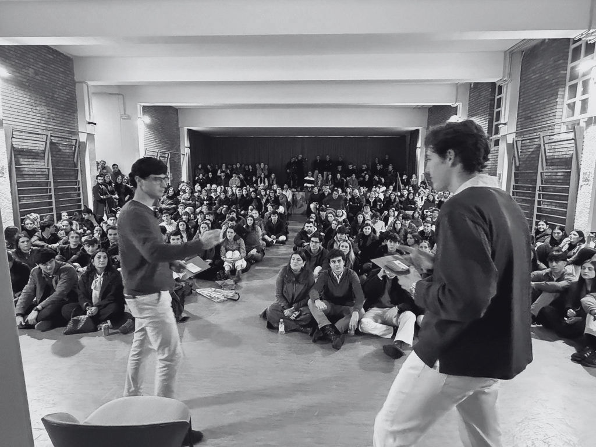

Ignacio Arévalo
El timón. Córdoba.
Señala el camino y hace que todo encaje, también bajo presión.
No queremos decirte qué tienes que hacer con tu vida, queremos que salgas con ganas de hacer más con ella.
De conocer, arriesgar, construir, ayudar. De soñar.
El Patio es una asociación que nace de tres amigos jóvenes que por fin dieron un paso adelante. Traemos a personas que tienen algo valioso que enseñar y las sentamos delante de gente con inquietudes que quiere hacer algo grande con su vida.
Unas veces será delante de ti, en los patios presenciales. Otras, alrededor de una mesa, con el podcast. Pero lo más importante eres tú.
Vienes solo o con amigos y te sientas donde quieras, también en el suelo.
El invitado cuenta su camino: lo que le costó, en qué se equivocó y qué aprendió.
El micro pasa al público. Aquí no hay preguntas tontas.
Afterpatio: música, comida y conversación con la gente que ha venido.


Pero eso no es suficiente. Hace falta quien se atreva a hacerla realidad.
El timón. Córdoba.
Señala el camino y hace que todo encaje, también bajo presión.

El motor. Córdoba.
Soñador incansable: cuando cree en algo, no para hasta hacerlo realidad.

El ancla. Lima.
Aporta sensibilidad y compromiso, y cuida cada paso del proyecto.
Al igual que tú, nuestro staff también es El Patio. Gracias por hacerlo posible.